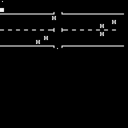
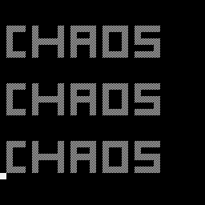
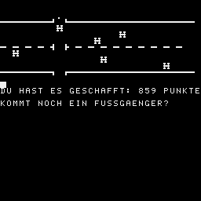

Steuerung: U ␣
EIN FUSSGAENGER SOLL EINE STARK
BEFAHRENE STRASSE MOEGLICHST
LEBEND UND SCHNELL UEBERQUEREN
MIT <U> LAEUFT ER VORWAERTS
MIT <␣> LAEUFT ER RUECKWAERTS
I C H G E H E L A N G S A M M
FUER DIE ERFOLGREICHE UEBERQUERUNG
GIBT ES 1000 PUNKTE.
ABER ES GIBT AUCH STRAFPUNKTE
- RUECKWAERTS LAUFEN: 1 STRAFP.
- FUER JEDES VORBEIFAHRENDE
AUTO:5 STRAFPUNKTE (BUMMELEI)
FUER JEDES HUPEN:3 STRAFPUNKTE
(VERKEHRSWIDRIGES VERHALTEN)
- FUER JEDEN UNFALL:250 STRAFP.
1 DATA 33,85,228,54,64,24,5,33,85,228,54,128,33,103
2 DATA 228,54,00,35,54,61,24,54,33,85,228,54,16,33,103,228
3 DATA 54,0,35,54,0,24,39,33,85,228,54,128,33,103,228
4 DATA 54,60,35,54,60,24,24,33,85,228,54,128,33,103,228
5 DATA 54,61,35,54,61,6,32,24,9,33,85,228,54,160,24,207
6 DATA 6,128,14,2,46,0,237,105,38,16,197,68,16,254,193
7 DATA 46,128,237,105,197,68,16,254,193,58,85,228,0,0
8 DATA 50,85,228,16,224,201
9 RESTORE 1
10 AY=-7168:FOR AY=AY TO AY+110
11 READ BY:POKE AY,BY:NEXT
13!TONAUFRUF AUF
14 A=-7168
17!-7168/A /E400
18!-7161/A+7 /E407
19!-7146/A+22/E416
20!-7131/A+37/E425
21!-7116/A+52/E434
22!-7099/A+69/E445
20 CLS
30 GOSUB 1550
40 GOSUB 960:CALL*E400
50 FOR X=1 TO 15 :PRINT:NEXT
60 PRINT "HAST DU SCHON EINE BERUHIGUNGS- PILLE GESCHLUCKT?????"
70 PAUSE 70:PRINT:PRINT "DANN KANNS JA LOSGEHEN":PAUSE 55
80 GOSUB 1550:CLS:CALL*E407
90 PRINT AT(0,0);" "
100 DIM AP(5),AR(5),A$(5),K$(1):L=1:R=31
110 FOR I=3 TO 11 STEP 8:PRINT AT(I,0);STRING$(31,""):NEXT
120 L=1:R=31:M=209:S=0
130 PRINT AT(7,0);STRING$(15," ")
140 FOR I=0 TO 5:AP(I)=INT((R-L-4)*RND(1))+L+2
150 AR(I)=1+INT(3*RND(1))
160 NEXT
170 FZ=12:M=209: F=30-(5+INT(20*RND(1)))
180 PRINT AT(7,F-1);" "
190 PRINT AT(3,F-1);" ":PRINT AT(11,F-1);" ":GOTO 480
200 FOR I=0 TO 2
210 II=5-I:I1=I+4:I2=II+5
220 PRINT AT(I1,AP(I));" "
230 AP(I)=AP(I)-AR(I)
240 PRINT AT(I1,AP(I));""
250 PRINT AT(I2,AP(II));" "
260 AP(II)=AP(II)+AR(II)
270 PRINT AT(I2,AP(II));""
280 IF AP(I)<L+3 THEN K=I:GOSUB 900:GOTO 330
290 IF I1<>FZ THEN 330:ELSE OUT 136,3
300 IF AP(I)<F THEN 330
310 IF AP(I)<F+7 THEN GOSUB 540
320 IF AP(I)=F THEN 570
330 IF AP(II)>R-4 THEN K=II:GOSUB 900:GOTO 380
340 IF I2<>FZ THEN 380:ELSE OUT 136,3
350 IF AP(II)>F THEN 380
360 IF AP(II)>F-7 THEN GOSUB 540
370 IF AP(II)=F THEN 570
380 NEXT
390! FUSSGAENGER
400 POKE 4,0:B=PEEK(4)
410 IF B=85 THEN M=M-4: GOTO 440
420 IF B=32 THEN M=M+4:S=S-1:ELSE 490
430 IF M>221 THEN M=209:PRINT AT(FZ,F);" ":FZ=FZ+1:GOTO 450:ELSE 480
440 IF M<209 THEN M=221:PRINT AT(FZ,F);" ":FZ=FZ-1:ELSE 480
450 IF FZ<4 OR FZ=7 OR FZ>10 THEN OUT 136,3:GOTO 470
460 IF AP(FZ-4+(FZ>7))=F THEN 570
470 IF FZ>11 THEN FZ=12:M=209:S=S-10
480 PRINT AT(FZ,F);CHR$(M)
490 IF FZ>2 THEN 200
500 FOR I=180 TO 50 STEP-10:OUT 136,7:OUT 136,I
510 PAUSE 1:NEXT:OUT 136,3
520 S=S+1000
530 GOTO 1260
540!HUPE
550 CALL*E400:CALL*E400:S=S-3
560 RETURN
570!UEBERFAHREN
580 OUT 136,7:OUT 136,68
590 PRINT AT(FZ,F);"":IZ=FZ-4+(FZ>7)
600 AP(IZ)=F+1+(FZ<7)*2
610 PRINT AT(FZ,AP(IZ));"":PAUSE 4:OUT 128,7:OUT 128,192:PAUSE 4
620 AZ=FZ-1:IF AZ=3 OR AZ=7 THEN AZ=FZ+1
630 PAUSE 5:PRINT AT(FZ,AP(IZ));" "
640 JZ=AZ-4+(AZ>7)
650 IF AP(JZ)=AP(IZ)THEN AP(IZ)=AP(IZ)+1+2*(FZ<7)
660 PRINT AT(AZ,AP(IZ));""
670 IF FZ<7 THEN I1=28:I2=F+1:K$(0)=" ":K$(1)=" "
680 IF FZ>7 THEN I1=3:I2=F-4:K$(0)=" ":K$(1)=" "
690 GOSUB 810
700 FOR J=1 TO 2:FOR I=1 TO 8
710 PRINT AT(FZ,I2);K$(K):K=1-K:PAUSE 2
720 NEXT I:PRINT AT(FZ,F);" "
730 NEXT J
740 I1=I2:IF FZ<7 THEN I2=0:ELSE I2=28
750 GOSUB 810
760 PRINT AT(FZ,I2);" "
770 S=S-250
780 PRINT AT(AZ,AP(IZ));" ":PRINT AT(FZ,AP(IZ));""
790 FZ=12:M=209:PRINT AT(FZ,F);CHR$(M)
800 GOTO 200
810! KRANKENWAGEN
820 T=120:H=3:K=1
830 FOR I=I1 TO I2 STEP SGN(I2-I1)
840 PRINT AT(FZ,I);K$(K):K=1-K
850 H=H+1:FOR J=0 TO 30:NEXT J
860 IF H<3 THEN 880
870 CALL*E400:CALL*E445:T=200-T:H=0
880 NEXT I:CALL*E407:CALL*E400
890 RETURN
900! NEUES AUTO
910 PRINT AT(5+K+(K<3),AP(K));" "
920 AR(K)=(1+INT(3*RND(1)))
930 IF K<3 THEN AP(K)=R:ELSE AP(K)=L
940 PRINT AT(5+K+(K<3),AP(K));""
950 S=S-5:RETURN
960! ERKLAERUNG
970 WINDOW:CLS
980 PRINT STRING$(29,"")
990 FOR I=1 TO 3:PRINT "";TAB(28);"":NEXT
1000 PRINT STRING$(29,"")
1010 PRINT AT(2,7 );"FEIERABENDVERKEHR"
1020 WINDOW 6,31,0,31
1030 PRINT "EIN FUSSGAENGER SOLL EINE STARK"
1040 PRINT "BEFAHRENE STRASSE MOEGLICHST LEBEND UND SCHNELL UEBERQUEREN"
1050 PRINT "MIT <E> LAEUFT ER VORWAERTS"
1060 PRINT "MIT <M> LAEUFT ER RUECKWAERTS"
1070 PRINT
1080 PRINT
1090 PRINT "I C H G E H E L A N G S A M M"
1100 PRINT ""
1110 PRINT "FUER DIE ERFOLGREICHE UEBER- QUERUNG GIBT ES 1000 PUNKTE.
1120 PRINT "ABER ES GIBT AUCH STRAFPUNKTE"
1130 PRINT "- RUECKWAERTS LAUFEN: 1 STRAFP."
1140 PRINT "- FUER JEDES VORBEIFAHRENDE"
1150 PRINT "AUTO:5 STRAFPUNKTE (BUMMELEI)"
1160 PRINT "FUER JEDES HUPEN:3 STRAFPUNKTE"
1170 PRINT " (VERKEHRSWIDRIGES VERHALTEN)"
1180 PRINT "- FUER JEDEN UNFALL:250 STRAFP."
1190 PRINT:PRINT SPC(22);"<ENTER>"
1200 WINDOW:PRINT AT(0,0);""
1210 X$=INKEY$:IF X$=""THEN 1210:ELSE BEEP
1220 IF X$=CHR$(27)THEN BP=128:GOTO 1240:ELSE BP=0
1230 IF X$<>CHR$(13)THEN 1210
1240 CLS:PRINT AT(0,0);" "
1250 RETURN
1260! GESCHAFFT
1270 N=N+1:D=D+S
1280 WINDOW 13,31,0,31:CLS:PRINT
1290 PRINT "DU HAST ES GESCHAFFT:";:K=S:GOSUB 1510
1300 IF N=1 THEN SB=S:SS=S:GOTO 1390
1310 IF S>SS THEN 1330
1320 SS=S:PRINT "DAS IST BISHER DAS SCHLECHTESTE!":PRINT
1330 IF S<SB THEN 1350
1340 SB=S:PRINT "DAS IST BIS JETZT SPITZE!":PRINT
1350 IF S<SB THEN PRINT "BISHERIGE SPITZE WAR:";:K=SB:GOSUB 1510
1360 IF S>SS THEN PRINT "DAS SCHLECHTESTE WAR:";:K=SS:GOSUB 1510
1370 PRINT "DER."
1390 PRINT "KOMMT NOCH EIN FUSSGAENGER?"
1400 WINDOW 13,31,0,31 :!RINTAT(13,0);" "
1410 X$=INKEY$:K=RND(1):IF X$=""THEN 1410
1420 IF X$="J"THEN 1450
1430 IF X$<>"N"THEN 1410:ELSE WINDOW:CLS
1440 OUT 136,0:END
1450 I=N:IF N<81 THEN X$="":ELSE X$="":I=I-80
1460 IF I>80 THEN X$="":I=I-80
1470 J=0:IF I>40 THEN J=1:I=I-40
1480 PRINT AT(FZ,F);" ":PRINT AT(J,I-1);X$
1490 WINDOW 2,31,0,31:CLS:GOTO 110
1500!FZ=12:M=209:CLS:S=0:PRINTAT(13,0);" ":GOTO 390
1510! PUNKTE AUSGEBEN
1520 X$=STR$(K)+" PUNKTE"
1530 PRINT TAB(31-LEN(X$));X$
1540 RETURN
1550 WINDOW:CLS
1560 FOR CC=1 TO 3:PRINT:PRINT:PRINT:PRINT:PAUSE 5
1570 PRINT " "
1580 PRINT " "
1590 PRINT " "
1600 PRINT " "
1610 PRINT " "
1620 NEXT
1630 PAUSE 30:RETURN